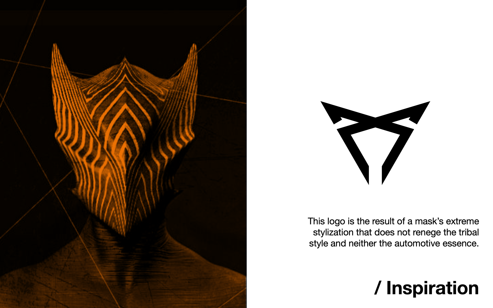
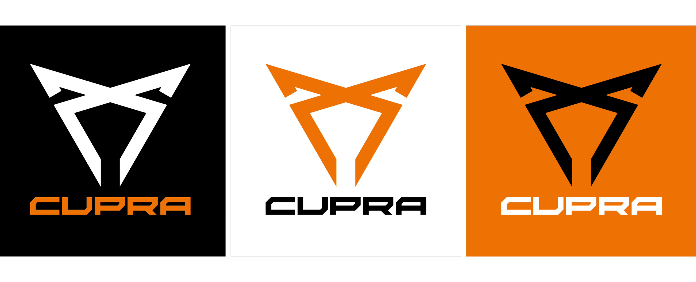
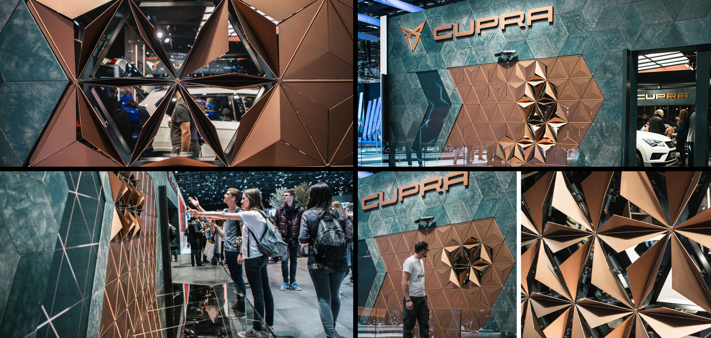
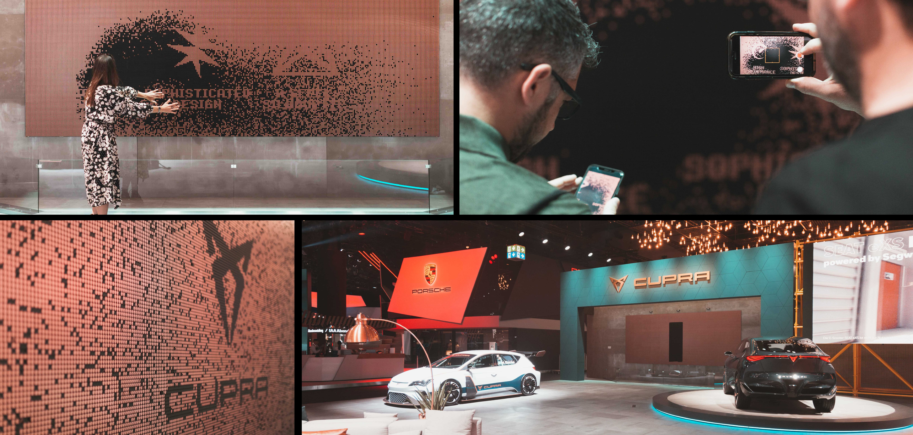
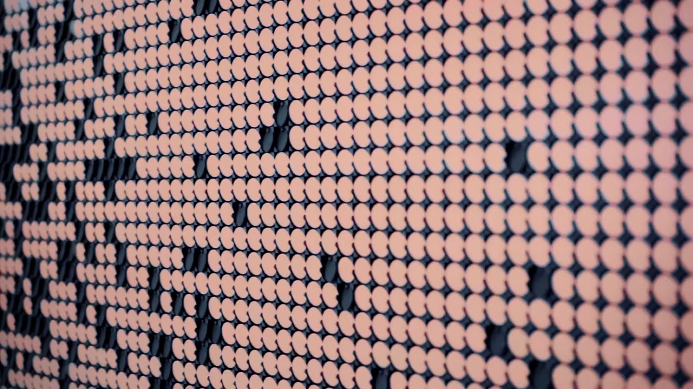

SEAT CUPRA - LOGO
Timeless. Effortlessly cool. Simultaneously rough and sophisticated. We contributed to create not only a brand, we need the logo to represent more than products, it needs to represent a style and a way of being.
Colors and materials have natural depth and complex colouring, conveying a sophistication and natural beauty. By contrasting between darker blues, lighter grays and copper colours, we created a unique palette, that maintains a sense of casual elegance.


This logo is the result of a mask's extreme stylization that does not renege the tribal style and neither the automotive essence.
/ Inspiration

KINETIC WALL
Our goal was to help Cupra convey its brand values, and to attract Motor Show visitors to the booth. It's composed of 139 "petals", which can move together in mesmerizing waves and open up dynamic "windows" for visitors to look through the wall. Cupra's kinetic wall is a magical, hypnotic installation that charms visitors and encourages them to interact. It is now a permanent installation at Casa Seat.


